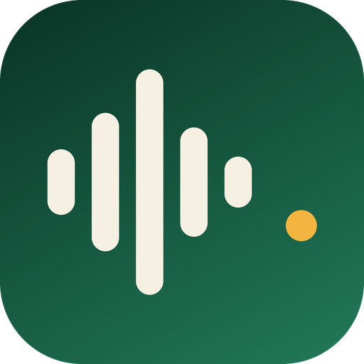
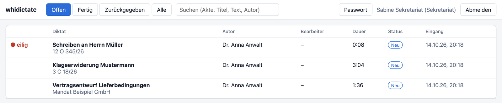
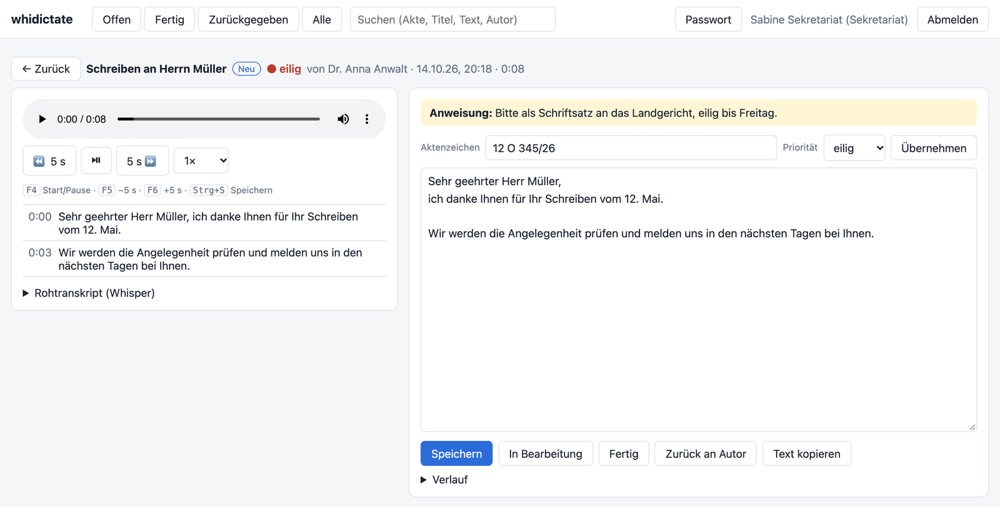

Diktieren in Outlook, Word und jedes andere Programm – mit lokaler Spracherkennung, Satzzeichen per Zuruf und einem Sekretariat, das Diktate prüft und fertigstellt.
BETA Windows, macOS und Linux · Open Source (Apache-2.0) · noch keine fertigen InstallerSie sprechen
Es erscheint im Dokument
Die Vorführung läuft im Browser und zeigt vereinfacht, wie aus gesprochenen Befehlen Satzzeichen werden.
Vom Sprechen bis zum fertigen Schriftstück – ohne Umwege und ohne Cloud.
Taste am Mikrofon oder Tastenkürzel drücken und sprechen. Der Text erscheint satzweise direkt im aktiven Programm.
Soll das Sekretariat schreiben: Aktenzeichen, Priorität und Anweisung ergänzen und abschicken. Ohne Netz wartet das Diktat in der Warteschlange.
Das Sekretariat hört mit, korrigiert den Text, setzt „Fertig“ – und die Anwältin sieht das Ergebnis.
Gebaut für den Kanzleialltag: deutsch und englisch, auf normalen Arbeitsplatzrechnern.
Die Spracherkennung läuft auf dem eigenen Rechner – mit Grafikkarte (AMD, NVIDIA, Intel, Apple) oder ohne. Keine Sprachdaten im Internet.
Outlook, Word, Browser, Praxis- und Kanzleisoftware: der Text landet, wo der Cursor steht.
Eine Sprechpausen-Erkennung teilt das Diktat in Sätze. Jeder Satz wird transkribiert, während Sie weitersprechen.
Philips SpeechMike und ähnliche Geräte: Tasten werden angelernt, auch unter Wayland, wo globale Tastenkürzel fehlen.
Gerichte, Namen und Fachbegriffe hinterlegen, damit Whisper sie richtig schreibt.
Eigener Server mit Web-Oberfläche: Audio-Player mit Sprungmarken, Versionsverlauf, Status, Benutzer und Rollen.
Eine Auswahl der Diktierbefehle. Wörter wie „Punkt 3“ oder „Standpunkt“ bleiben normaler Text.
| Sie sagen | Es entsteht | Sie sagen (EN) | Es entsteht |
|---|---|---|---|
| „Punkt“ | . | „period“ | . |
| „Komma“ | , | „comma“ | , |
| „Fragezeichen“ | ? | „question mark“ | ? |
| „Doppelpunkt“ | : | „colon“ | : |
| „neue Zeile“ | Zeilenumbruch | „new line“ | Zeilenumbruch |
| „neuer Absatz“ | Leerzeile | „new paragraph“ | Leerzeile |
| „Klammer auf / zu“ | ( ) | „open / close bracket“ | ( ) |
| „Absatzzeichen“ | § | „open / close quote“ | “ ” |
Eine Web-Oberfläche, im Browser, ohne Installation. Die Beispiele zeigen erfundene Daten.


Mandantengeheimnis und Cloud passen schlecht zusammen. whidictate kommt deshalb ohne aus.
Fertige Installer gibt es noch nicht. Zum Testen den Client aus dem Quellcode bauen (Rust und CMake nötig):
git clone https://github.com/fmatsch/whidictate cd whidictate # Client (Tray-App) cargo run --release -p whidictate # Server (optional, für die Sekretariatsfunktion) cargo run --release -p whidictate-server -- create-user admin --role admin cargo run --release -p whidictate-server -- serve
Beim ersten Start lädt die App auf Wunsch ein Whisper-Modell herunter (Einstellungen → Spracherkennung). Server-Betrieb mit Docker und HTTPS: docs/SERVER.md.